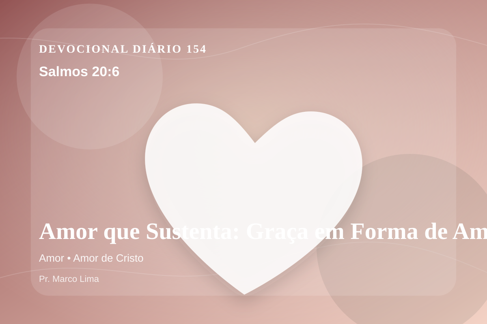

Amor que Sustenta: Graça em Forma de Amor (Salmos 20:6)
Agora eu sei que o SENHOR salva a seu ungido; desde os céus de sua santidade ele lhe responderá, com o poder salvador de sua mão direita.
Pensamento
Esta meditação olha para a mesma verdade por outro ângulo, buscando obediência concreta e não apenas informação. Hoje, Salmos 20:6 não deve ser lido como uma frase isolada, mas como uma Palavra de Deus para alcançar a consciência e reorganizar a vida diante de Cristo.
Salmos 20:6 chama o coração a ouvir Deus com reverência e responder com fé prática. A Palavra não foi dada para enfeitar pensamentos religiosos, mas para conduzir pessoas reais ao Senhor.
O tema de amor precisa ser recebido com simplicidade e seriedade. Esse ensino precisa descer da mente para a prática. O amor bíblico não é apenas afeto, mas decisão santa que reflete o caráter de Deus. Ele aparece nas Escrituras como entrega, paciência, serviço e fidelidade, tendo em Cristo sua expressão mais perfeita.
Pergunte com honestidade: tenho obedecido a Deus nessa área ou apenas concordado com o texto? A fé bíblica não se contenta com admiração; ela se expressa em arrependimento, confiança e passos concretos.
Arrependimento não é apenas sentir peso na consciência; é voltar-se para Deus, abandonar o caminho que entristece o Senhor e confiar que a graça de Cristo é suficiente para perdoar e transformar.
Este é o evangelho que sustenta toda aplicação: Jesus Cristo morreu pelos pecadores, ressuscitou em vitória e chama cada pessoa a responder com fé, arrependimento e uma vida rendida ao Seu senhorio.
O evangelho é a resposta mais profunda para essa necessidade: Jesus morreu pelos nossos pecados, ressuscitou e chama pecadores ao arrependimento e à vida nova.
Hoje, escolha uma atitude pequena e verificável: uma oração honesta, uma conversa corrigida, um pedido de perdão, uma renúncia ou uma decisão de obedecer sem adiar.
Para Praticar Hoje
- Leia Salmos 20:6 lentamente e destaque uma palavra ou expressão central do texto.
- Confesse a Deus um pecado, resistência ou frieza espiritual que esta Palavra revelou.
- Declare sua fé em Jesus Cristo e pratique hoje uma atitude concreta de arrependimento e obediência.
Oração
Pai, o mundo ensina a amar com medidas, mas Tu chamas a um amor sem limites. Salmos 20:6 aponta para Cristo como o exemplo perfeito de entrega. Cura as feridas que me impedem de amar com liberdade. Ensina-me a responder com simplicidade.
{kind=link}